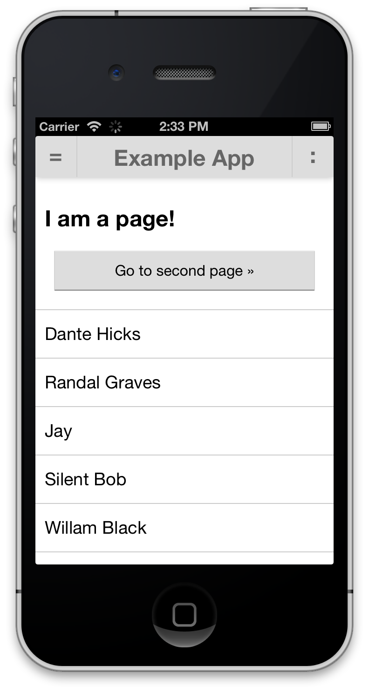

Javascript UI Faceoff!
None of the Above
WHO AM I?
Tommy-Carlos Williams
tommy@devgeeks.org
@theRealDevgeeks
http://blog.devgeeks.org
http://github.com/devgeeks
It's Not As Hard
As You Think
It comes down to:
- HTML markup like any single page app
- Setting a simple base CSS for mobile devices
- Making your "pages" fit the screen
- Any "fixed" items like NavBars or TabBars
- Scrolling the content in the middle
- Navigation (with or without transitions)
- Forms (not covered here, but not that hard)
Meta Tags
<meta http-equiv="Content-Type" content="text/html; charset=UTF-8" />
<meta name = "format-detection" content = "telephone=no"/>
<meta name="apple-mobile-web-app-capable" content="yes">
<meta name="viewport"
content="user-scalable=no, initial-scale=1, maximum-scale=1,
minimum-scale=1, width=device-width" />
A Simple Base
Some sane defaults
/* GENERAL */
body {
-webkit-tap-highlight-color: rgba(0,0,0,0);
-webkit-touch-callout: none;
-webkit-text-size-adjust: none;
-webkit-user-select: none;
user-select: none;
font-size: 100%;
padding: 0;
margin: 0;
background-color: #fff;
font-family: "Roboto", "HelveticaNeue", Helvetica, Arial, sans-serif;
}
a {
text-decoration: none;
color: inherit;
}
The App
Use the full screen
/* APP */
.app {
-webkit-transform: translate3d(0, 0, 0);
transform: translate3d(0, 0, 0);
position:absolute;
left: 0; top: 0; right: 0; bottom: 0;
overflow: hidden;
}
A Basic "Page"
Full screen, but padded,
and overflow is not hidden
/* PAGES */
.page {
-webkit-transform: translate3d(0, 0, 0);
transform: translate3d(0, 0, 0);
position: absolute;
left: 0; right: 0; bottom: 0; top: 44px;
padding: 10px;
background-color: #fff;
overflow: auto;
-webkit-overflow-scrolling: touch;
}Note: top is 44px to leave room for the NavBar
Adding A NavBar
Absolutely postioned, styled to taste
/* NAVBAR */
.navbar {
position: absolute;
top: 0; left: 0; right: 0;
height: 44px;
color: #666;
background-color: #ddd;
box-shadow: 0 0 8px rgba(0,0,0,0.3);
z-index: 1;
}
.navbar .title {
position: absolute;
left: 44px;
right: 44px;
text-align: center;
font-size: 150%;
margin: 8px;
font-weight: bold;
}
NavBar Buttons
/* NAVBAR BUTTONS */
.navbar .button {
width: 44px;
height: 44px;
position: absolute;
top: 0; bottom: 0;
}
.navbar .button a {
display: block;
text-align: center;
font-size: 150%;
font-weight: bolder;
height: 39px;
padding-top: 5px;
}
.navbar .button a:active {
background-color: #ccc;
}Note: There are also some generic .button-left and .button-right styles needed
Other Buttons
a.button {
position: relative; display: block;
padding: 10px; margin: 10px;
background-color: #ddd;
text-align: center;
border: 1px solid rgba(0,0,0,0.1);
border-top: 1px solid rgba(255,255,255,0.4);
border-bottom: 1px solid rgba(0,0,0,0.5);
border-radius: 1px;
}
a.button:active {
background-color: #ccc;
border: 1px solid rgba(0,0,0,0); /* clear */
}
.button-left {
left: 0;
border-right: 1px solid #ccc;
}
.button-right {
right: 0;
border-left: 1px solid #ccc;
}
Scrolling
As simple* as:
overflow: auto;
-webkit-overflow-scrolling: touch;
*Nothing is really simple, on Android pre v3 this is not supported
Page Navigation
with CSS transitions
Here is where it gets fun
Heartlessly stolen from:
http://coenraets.org/blog/2013/03/hardware-accelerated-page-transitions-for-mobile-web-apps-phonegap-apps/
Page Navigation
CSS
.page.current {
-webkit-transform: translate3d(0, 0, 0);
transform: translate3d(0, 0, 0);
}
.page.left {
-webkit-transform: translate3d(-100%, 0, 0);
transform: translate3d(-100%, 0, 0);
}
.page.right {
-webkit-transform: translate3d(100%, 0, 0);
transform: translate3d(100%, 0, 0);
}
.page.transition {
-webkit-transition-duration: .2s;
transition-duration: .2s;
}
Page Navigation
JavaScript
var homePage = document.getElementById("homePage"),
newPage = document.getElementById("newPage");
// Position the page at the starting position of the animation
newPage.className = "page right";
// Position page at ending position of animation and add transition-duration
newPage.className ="page transition center";
// Simultaneously slide out the current page to the left of the viewport
homePage.className = "page transition left";
Page Navigation
Wiring to a "click"
var navigateToAnotherPage = function(event) {
event.preventDefault();
var currentPage = document.querySelector(".current"),
newPage = document.getElementById(this.hash.substring(1)),
newPage.className = "page right";
newPage.className ="page transition current";
currentPage.className = "page transition left";
};
var secondPageButton = document.getElementById("toSecondPage");
secondPageButton.addEventListener(
"click", // ...or "tap"/"touchend"? We'll get to that...
navigateToAnotherPage,
false
);Note: this can be made a great deal simpler using Zepto or jQuery ...or even better, something like Backbone.js
Avoiding The 300ms "click" Delay
Use "touchend" instead
Or use a lib like Zepto, Fastclick, etc
But Now I'm STUCK!
Getting Back
var navigateBackToAnotherPage = function(event) {
event.preventDefault();
var currentPage = document.querySelector(".current"),
newPage = document.getElementById(this.hash.substring(1)),
newPage.className = "page left";
newPage.className ="page transition current";
currentPage.className = "page transition right";
};
A Back Button
CSS
var previousPage;
var navigateBack = function(event) {
event.preventDefault();
if (previousPage) {
var currentPage = document.querySelector(".current"),
newPage = document.getElementById(previousPage),
backButton = document.getElementById("backButton"),
menuButton = document.getElementById("menuButton");
menuButton.className = "button button-left menu";
backButton.className = "button button-left back hidden";
newPage.className = "page left";
newPage.className ="page transition current";
currentPage.className = "page transition right";
}
};
// Set previosPage to the element id of the previous page when navigating forwardNote: to go more than one level deep and back, make sure previousPage is more like an Array you can pop off one at a time
End Result *
http://jsbin.com/noneoftheabove/39/* I know it doesn't look like much, but it only took 2 hours...
Extra Credit
- Slide Menu
- Navigating via the list
- Changing the title based on current page
- Modularisation / MVC
- ???
- Profit
Pure CSS Frameworks
TopCoat - http://topcoat.io
Bootstrap - http://getbootstrap.com
Thanks!
Feel free to ask me any PhoneGap / Cordova questions you may have as long as they have nothing to do with jQuery Mobile.
Just kidding. *
* I'm totally not kidding...